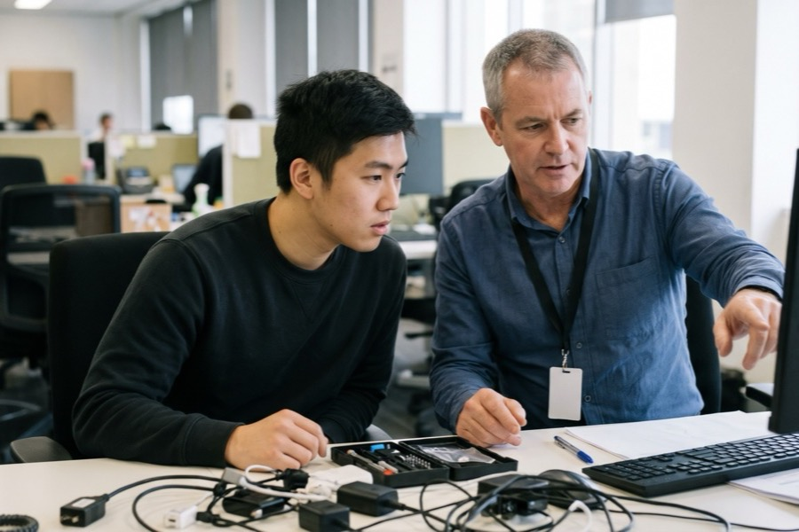

Job Search & Career Coaching Program
A comprehensive, personalised program to build your job-search strategy, enhance your applications and prepare for interviews.
Enquire NowFor Job Seekers
Whether you’re a recent graduate, an experienced professional or ready for a career change, Skills Solutions Australia provides personalised coaching, practical job-search support and industry connections to help you take your next step.
Supporting graduates and professionals across a range of industries to build their careers and access new opportunities.



Tailored guidance to help you achieve your career goals.
Real-world insight and knowledge of what employers need.
Access to our extensive industry and employer networks.
Build your skills, confidence and job opportunities faster.
Practical, personalised support to help you stand out, find opportunities and secure the right role.
A comprehensive, personalised program to build your job-search strategy, enhance your applications and prepare for interviews.
Enquire NowFlexible, on-demand support tailored to your needs, including job-search advice, interview preparation and career planning.
Enquire NowSupport to secure a meaningful internship, with coaching and guidance to build experience, confidence and workplace skills.
Enquire Now1 of 14
We work with graduates, early-career professionals and people changing careers across a range of industries. If you’re unsure which roles to target, what Australian employers are looking for or how to talk about your experience, we can help.
We’ll work with you on your job search strategy, résumé and LinkedIn profile, tailored applications and selection criteria, interview preparation and networking. You’ll get practical feedback and personalised guidance as you apply for roles.
Yes. You can book one-on-one coaching, practise for an upcoming interview or get feedback on an application before you submit it. Coaching sessions are online.
Internships typically run for 12 weeks, two to three days a week. You’ll work on a project with a host organisation, with a workplace mentor to guide you and provide feedback. We consider your skills, interests and location when looking for a suitable placement. Timing depends on host availability.
Internships through the program are unpaid and structured around learning. Some graduates have gone on to receive job offers from their hosts. Any offer depends on the host’s hiring needs.